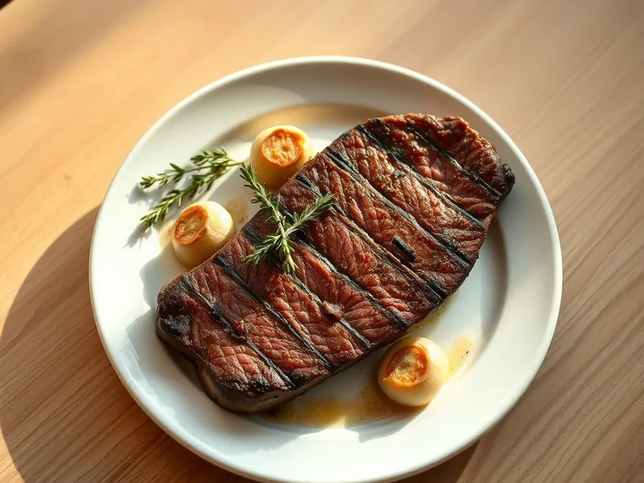

Говяжий стейк на сковороде
Стейк из говядины с корочкой и розовой серединой, политый чесночным маслом
20 мин2 порц.504 ккал на порциюБ 38 · Ж 38 · У 2Европейская кухня
Открыть в приложении: порции, таймеры, список покупок
Продукты на 2 порц.
- Говядина400 г
- Сливочное масло20 г
- Чеснок2 зуб.
- Растительное масло2 ч. л.
- Соль0,5 ч. л.
- Перец чёрный молотый2 щеп.
- Сушёные травы по желанию1 щеп.
Как готовить
- Нарежьте мясо на 2 стейка толщиной 2 см (рибай, вырезка или толстый край). Обсушите полотенцем и щедро посолите, 2 минуты.
- Разогрейте сухую тяжёлую сковороду на сильном огне 3 минуты, затем смажьте маслом.
- Выложите стейки и не трогайте 3-4 минуты, пока не появится тёмная корочка. Переверните и жарьте ещё 3-4 минуты.
- Убавьте огонь до среднего, добавьте сливочное масло, раздавленный чеснок и травы. Поливайте стейки пенящимся маслом ложкой 1 минуту.
- Переложите стейки на доску, поперчите и дайте отдохнуть 5 минут. Мясо пружинит при нажатии, на разрезе розовое.
Совет. Достаньте мясо из холодильника за 20 минут до жарки и не режьте сразу со сковороды: отдых сохраняет сок внутри.